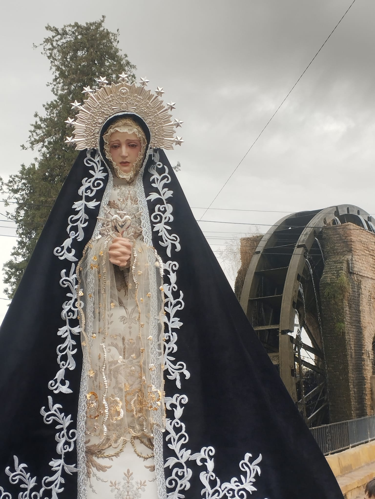
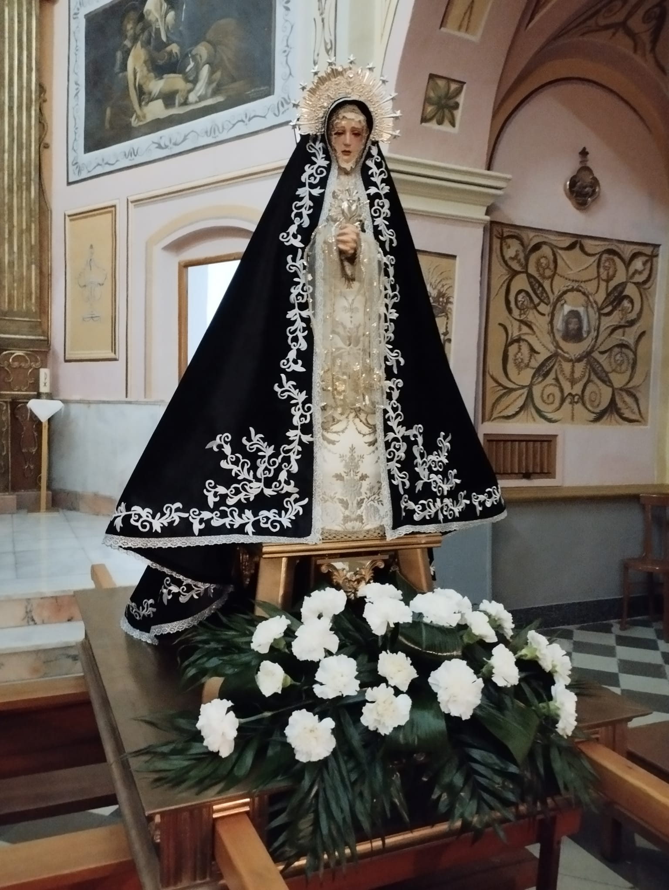
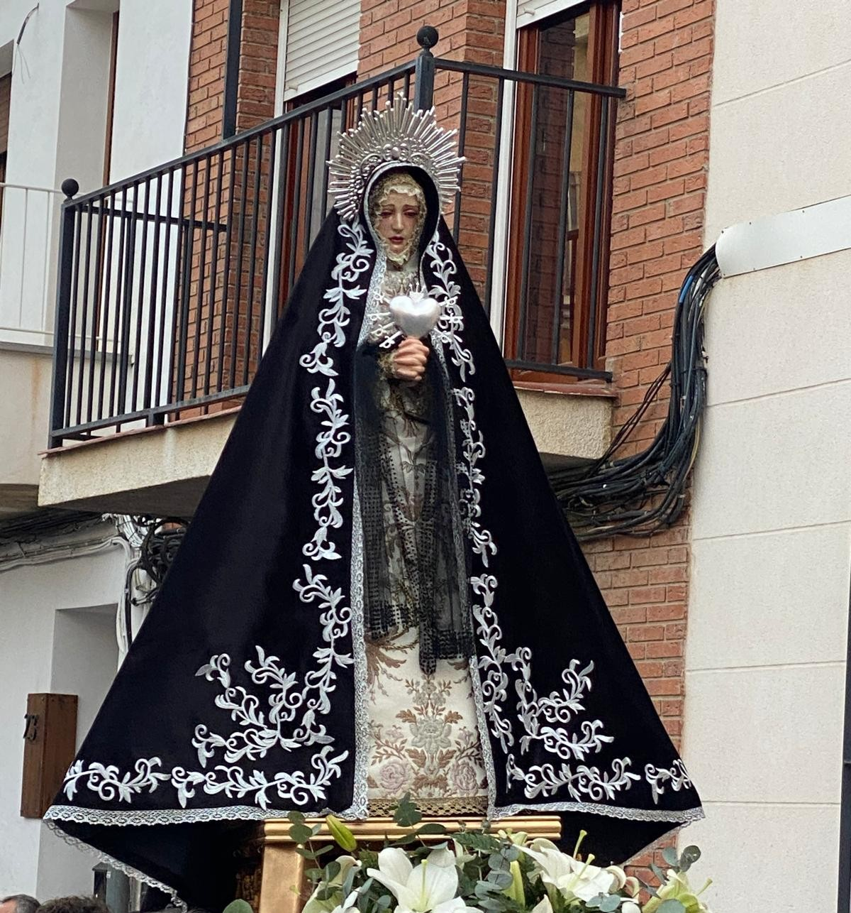

Virgen del Paso
María Santísima del Paso, la Virgen del Paso, es la réplica en miniatura de la titular de la cofradía.
El autor de esta imagen es Manuel Vigo y fue adquirida en 2022.
Esta imagen es de candelero y tiene 85cm de altura.
Luce una saya de brocado valenciano y manto de terciopelo negro con aplicaciones en plata.
  